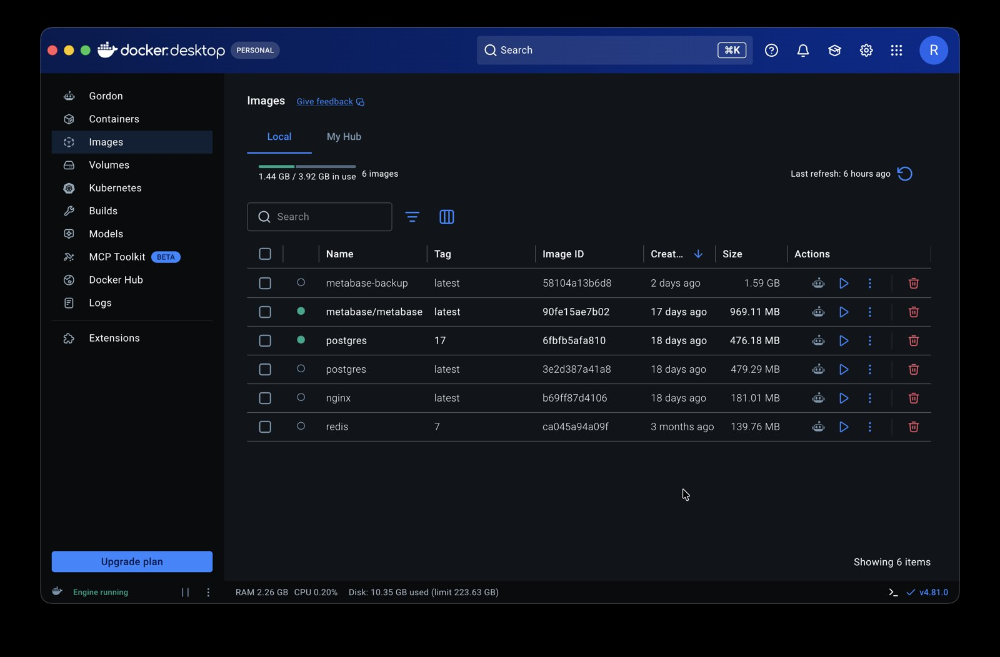
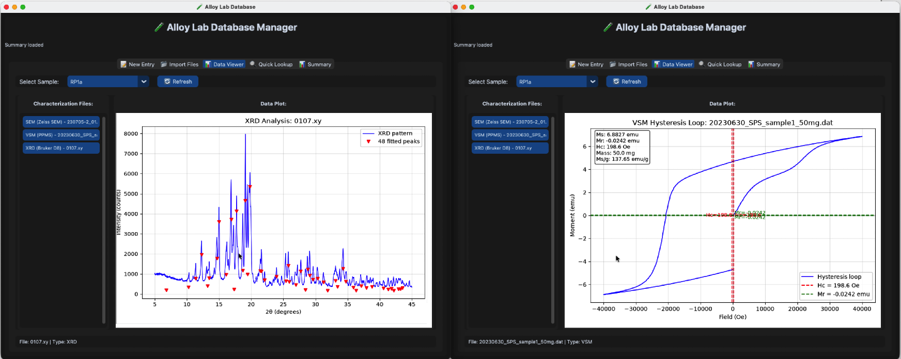
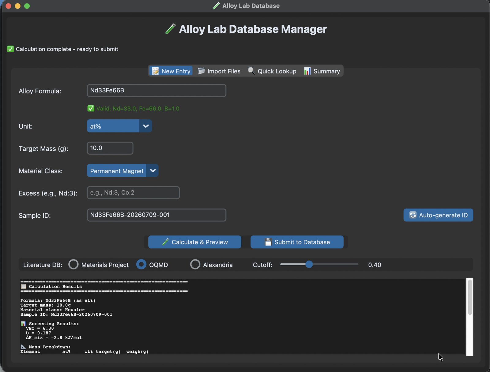
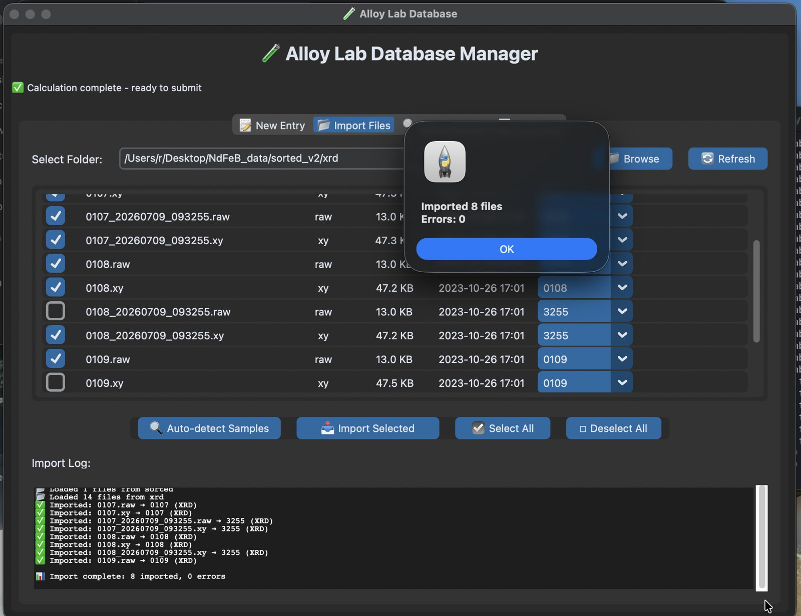
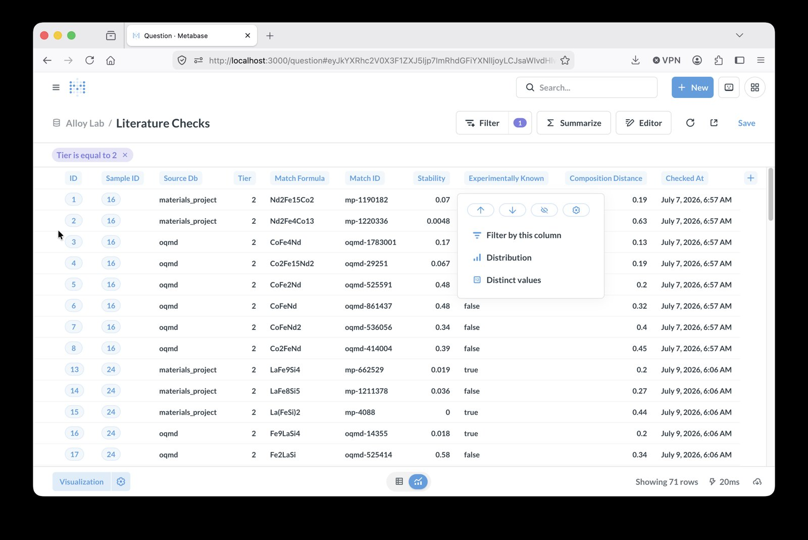

Materials Science · Personal Infrastructure Project
A Personal Lab Database for Experimental Alloys
A complete research infrastructure — composition calculator, literature cross-checking against three independent public databases, and multi-instrument characterization import — built to replace years of scattered spreadsheets and a genuinely messy desktop research folder.
Background
Why this project
As a materials researcher working on novel alloys, my experimental results were scattered across spreadsheets, Origin project files, raw instrument output, and — if I'm honest — a genuinely messy desktop folder accumulated over years. Two things motivated building a proper system, in roughly equal measure.
A real lab database
One place to record what was made, how, and what it measured — usable later as training data for machine learning.
Plain curiosity
Could this be built solo? And could the desktop folder finally be tamed after years of neglect? Both turned out to matter as much as the practical goal.
Workflow
The researcher's routine
The system was built to directly support this routine — not to replace it.
Engineering
What was planned vs. what was built
The original design sketch was considerably more ambitious than what actually shipped — a full Docker Compose stack with MinIO/S3 object storage, Redis caching, a Jupyter analysis environment, and a file-watcher service auto-ingesting instrument output. Real use quickly showed that a leaner system — Postgres, a Python API layer, and a proper desktop interface — covered everything actually needed, without the operational overhead of running five services to enter one sample.
Knowing what to cut turned out to matter more than the original breadth of the plan. Every sample's full story — composition, how it was made, and what it measured — still stays connected, just through a considerably simpler path than first imagined.

Screenshot: Docker containers runningalloy_lab ├── samples composition (JSONB), lineage, VEC/δ/ΔH_mix ├── synthesis method, temperature, atmosphere, duration ├── characterization one row per XRD/VSM/SEM measurement ├── properties extracted numeric results per measurement ├── literature_checks deduped matches from 3 external databases └── material_classes
Tooling
From formula to grams
Type a formula. Get exactly what to weigh.
This was, by a wide margin, the most-iterated part of the whole
project. Every feature that looked simple at first revealed a real
edge case once tested against actual formulas — most memorably,
distinguishing a genuine typo from valid chemistry: Cp
looks like a mistake, but is actually two real, valid one-letter
elements (C and P) run together. There's no purely syntactic way to
know which was intended, so the parser now requires an explicit
number after every element and raises a clear error on anything
ambiguous, rather than silently guessing.
- Accepts natural formula notation, atomic % or weight %
- Supports pre-alloys (master alloys) as building blocks, not just pure elements
- Compensates for evaporation losses during melting with an adjustable excess %, without altering the recorded target composition
Fe65Nd30Co5 → 10 g target Fe 4.40 g Nd 5.24 g Co 0.36 g
Physics
A cheap first filter
Before any melting: three composition-only numbers, computed instantly, no lab work required.
Valence Electron Concentration
Predicts likely crystal structure — solid solution type (BCC / FCC).
Atomic size mismatch
Small δ favors a solid solution; large δ favors intermetallic phases.
Mixing enthalpy
Predicts compound-forming tendency between elements.
Cross-Validation
Is this already known?
Every composition is checked against three independent public materials databases.
Two fully independent databases (Materials Project and OQMD) agreed on a compound's stability within 0.001 eV/atom — strong cross-validation that the result reflects real physics, not one group's specific settings.
Databases used: Materials Project · OQMD · Alexandria
A fourth database (AFLOW) was evaluated and deliberately dropped after hitting an unmaintained client library, a dead API endpoint, and unresolved query-semantics ambiguity — three independent reasons was enough to redirect effort toward Alexandria instead, which turned out to be the stronger choice regardless.
Instruments
From data to discovery
Real characterization data now flows directly into the database — no manual transcription.
| Sample | XRD peaks | Lattice a (Å) |
|---|---|---|
| RP1a | 101 | 15.627 |
| RP2a | 96 | 15.630 |
| RP3a | 98 | 15.744 |
| VSM property (sample RP1a) | Value |
|---|---|
| Saturation moment (Ms) | 6.883 emu |
| Remanence (Mr) | −0.024 emu |
| Coercivity (Hc) | 198.6 Oe |
| Ms per gram | 137.65 emu/g |
The VSM pipeline caught a genuine data-quality problem, not just a code bug: the instrument's own recorded sample mass was an obviously wrong placeholder value, with the real mass only available encoded in the filename. Normalizing by the wrong mass would have silently corrupted every derived magnetic property — the fix was parsing mass from the filename convention instead of trusting the instrument's own metadata field.

Screenshot: XRD pattern and VSM hysteresis loop rendered in the Data ViewerSEM metadata extraction
The instrument (Zeiss) stores its real metadata inside proprietary compressed binary TIFF tags rather than standard fields — a custom binary string-extraction routine was needed to recover magnification, accelerating voltage, working distance, and detector channel.
Scale problem, not a parsing problem
Importing 690 real SEM files one at a time was correct but slow — 5–10 minutes for the full set. Solved with batch import, without touching the parser itself.
| SEM metadata (example) | Value |
|---|---|
| Magnification | 1.00 KX |
| EHT (voltage) | 10.00 kV |
| Working distance | 7.1 mm |
| Pixel size | 277.3 nm |
| Detector | SE2 / InLens |
Interface
A real desktop application
Everything above, in one application — not a collection of scripts.
- Real-time formula validation as you type
- Material classes loaded live from the database
- One click: screen, cross-check all three literature databases, calculate, submit
- A per-database relevance slider — each database remembers its own cutoff, no re-querying when switching views
- A Data Viewer tab rendering XRD patterns, VSM loops, and SEM images directly, without leaving the app

Screenshot: New Entry tab, and the literature database selector with cutoff slider
Dashboard 6 shows the final prioritized market-entry strategy recommendation. Screenshot: Data import interface — XRD, VSM, and SEM characterization data imported directly into the database Screenshot: SEM image viewer — fast visualization of SEM images directly in the application
Screenshot: SEM image viewer — fast visualization of SEM images directly in the application

Screenshot: Metabase dashboard — browsing the database without writing SQLRetrospective
What this project taught
Credentials, twice
A hardcoded password was found and "fixed" once, then found again as a commented-out leftover copy. Grepping for a secret isn't done until it returns nothing at all, comments included.
Cutting scope on purpose
A fourth literature database (AFLOW) was abandoned after three independent red flags — an unmaintained library, a dead endpoint, unresolved query semantics. Stopping was the correct call, not a failure to push through.
Instrument metadata isn't automatically trustworthy
Both the VSM sample-mass field and the SEM binary tags looked like reliable structured data. Neither was, in different ways — worth verifying, not assuming.
Test the path that changed
A dedup-logic regression shipped because the fix was verified in isolation rather than through the actual full call chain it belonged to. Caught only by running it for real.
Which venv has the package?
Prototyping in one virtual environment and integrating in
another is an easy way to get a clean import error later — worth
checking pip list in the venv that will actually run
the script.
The messy folder, tamed
A standalone sorter utility, tested against the real multi-year desktop folder, correctly routed hundreds of files — XRD, ICP, Origin projects — into organized subfolders in one pass. The second motivation for this project, resolved.
Status
Where things stand
✅ Working now
- Core database, credentials & schema
- Mass calculator (pre-alloys, excess %)
- Composition screening (VEC / δ / ΔH_mix)
- Three literature databases, deduped & cross-checked
- XRD, VSM, and SEM characterization import
- Desktop GUI, five tabs, end to end
- Data sorter, tested on real files
🔜 Stage 2
- Element-fraction table, restructured for ML-style queries
- Deeper peak-fitting and feature extraction from raw curves
- Patent-record cross-checking
- Consolidating the CLI and GUI into one primary interface